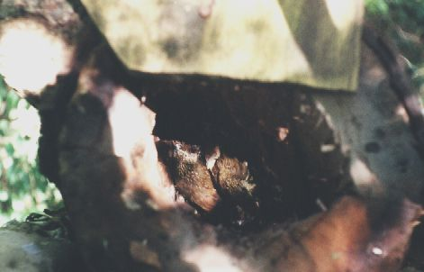
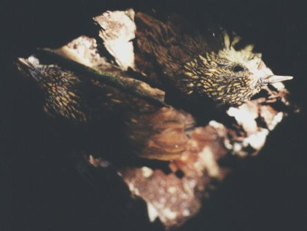
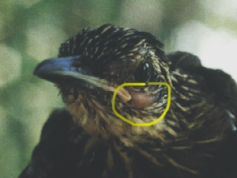
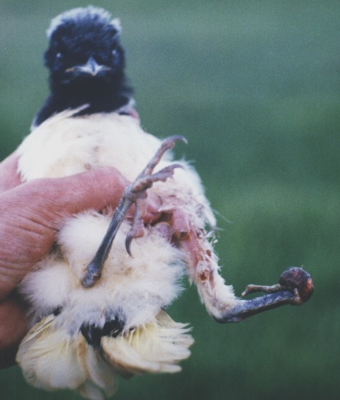

Retorno à página do Projeto Papagaio-charão
Subprojeto:
Ninhos Artificiais
Aspectos Gerais

Local: Fazenda Ribas - Carazinho - RS - Brasil Foto: arquivo CEPEN / 428p / M. D. N. Xavier
Filhotes de arapaçu (Dendrocolaptidae) no ninho 32.
Veja abaixo mais de perto.

Local: Fazenda Ribas - Carazinho - RS - Brasil Foto: arquivo CEPEN / 429p / M. D. N. Xavier
Filhotes de arapaçu (Dendrocolaptidae) no ninho 32.
Infelizmente, aos nossos olhos nem tudo é belo na natureza.

Local: Fazenda Ribas - Carazinho - RS - Brasil Foto: arquivo CEPEN / 443p / M. D. N. Xavier
Não bastasse a destruição ambiental, as doenças, as disputas territoriais entre as aves,
os predadores naturais,
ainda existe significativo prejuízo à saúde dos animais por parasitoses diversas.
Observe na circunferência amarela,
a saliência de pele hospeda uma larva de mosca de berne,
Dermatobia sp.
Alguns filhotes de aves, já nos primeiros dias de vida, podem ser parasitados por diversas larvas
simultaneamente, o que não raro causa deformidades, mutilações e até mortes.
Veja na triste imagem da jovem gralha-picaça abaixo.

Local: Fazenda Ribas - Carazinho - RS - Brasil Foto: arquivo CEPEN / 443p / M. D. N. Xavier
Este filhotão de gralha-picaça,
Cyanocorax chrysops
foi encontrado no chão da mata,
tentando subir nalgum galho.
Apresentava dificuldade para andar (aos saltos como é comum nos passeriformes),
e também possuía dificuldades para vôo.
Outras gralhas estavam agitadas nas proximidades, (provavelmente seu grupo familiar,
já que esta espécie vive em pequenos bandos em torno de 10 indivíduos).
Na foto, podem ser observadas ainda,
caroços de algumas larvas de berne na sua perna esquerda.
"Justiça é uma invenção humana"
- Goimbé -
Se pudesse raciocinar,
certamente a mamãe berne ficaria feliz com o viço das suas crias
alimentadas com aqueles suculentos filés.